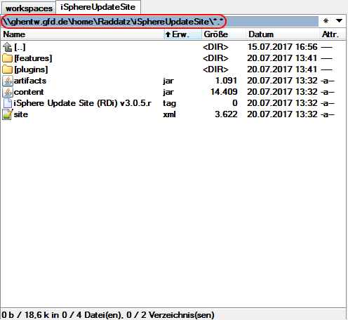
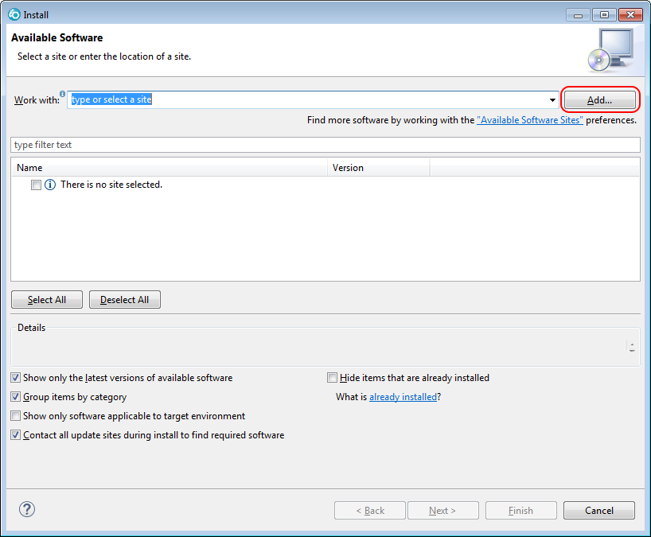
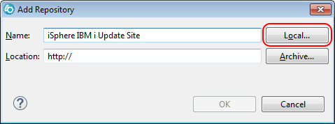
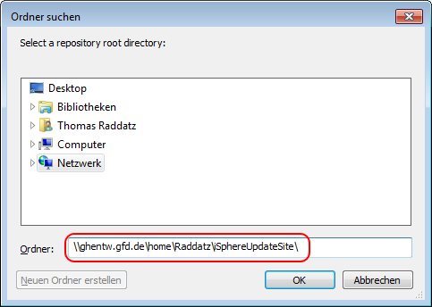
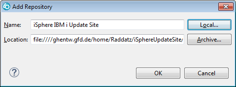
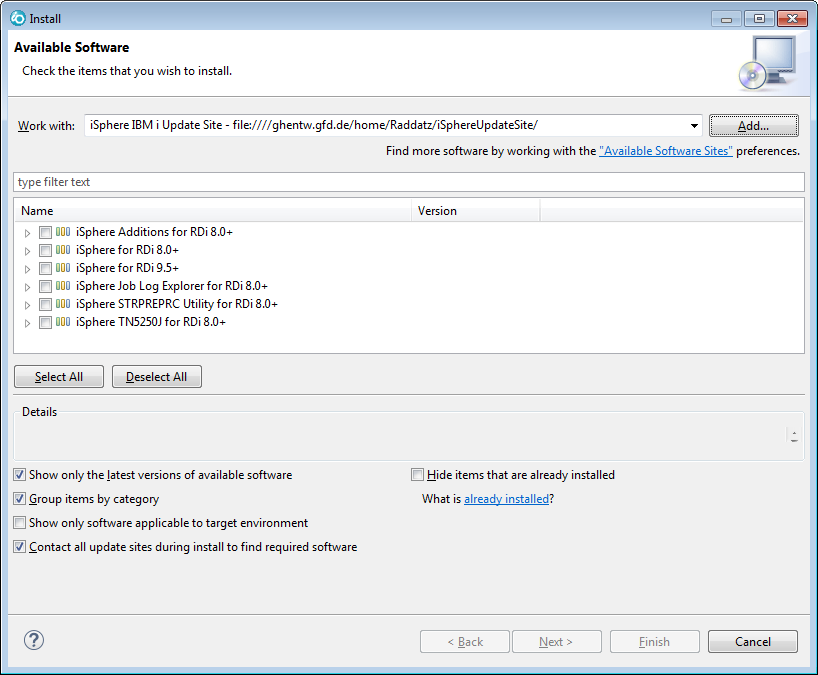
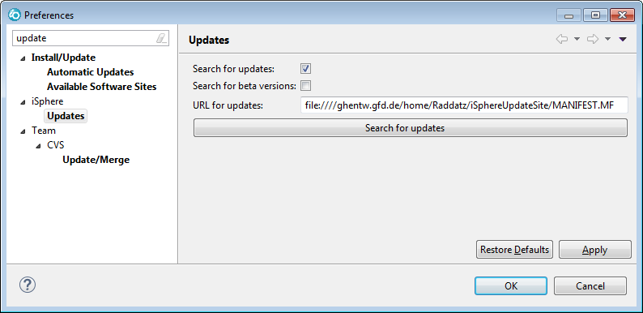
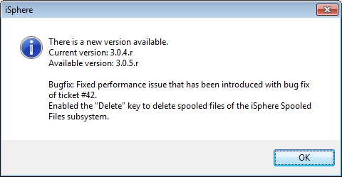

Sometimes it may be useful to have a local iSphere update site, e.g. in order to control when to make an update available for your developers/colleagues.
Creating a local update site is easy, following these steps:
An iSphere update site can be stored on any PC or server your developers can load data from. Therefore you may consider to use an IFS folder on your IBM i for your update site. The following example follows that idea and describes how to create an update site directly on an IBM i.
First you need to create the actual folder. In this example the folder is called iSphereUpdateSite.
Then download the current iSphere zip file from the iSphere web site. This example uses the zip file of iSphere v3.0.5.r.
Now extract the zip file into the folder of the update site on your IBM i. The result should look similar to:

Start with Help -> Install New Software and click the [Add] button:

Enter a descriptive name for your local update site and click the [Local...] button to select the path of your update site folder.


Afterwards the Add Repository dialog should look as shown below.

Click the [OK] button to close the window. The content of the update site should show up immediately:

iSphere can check for new updates automatically each time RDi starts. For that, you have to place a MANIFEST.MF file with update information into the folder of your iSphere local update site:
That MANIFEST.MF file is read by the iSphere Check for Updates service when checking for new updates. The file has two sections. The first one is used for releases and the second one for beta versions. All keys with "Bundle" provide information regarding a release version. All keys with "Beta" are used for beta versions. The keys and their meanings are:
| Release Version | ||
|---|---|---|
| Bundle-Version | - | Version number of the iSphere release. |
| X-Bundle-Update-Library | - | Specifies whether or not updating the iSphere library is required. (true|false) |
| X-Bundle-Update-Library-Info | - | Additional information regarding the iSphere library update. |
| X-Bundle-Info | - | Additional information about the new iSphere release, eg. bug fixes, enhancements, etc. Use '\n' to start a new line. Use a dot (.) for empty lines. |
| Beta Version | ||
| X-Beta-Version | - | Version number of the iSphere beta release. |
| X-Beta-Update-Library | - | Specifies whether or not updating the iSphere library is required. (true|false) |
| X-Beta-Update-Library-Info | - | Additional information regarding the iSphere library update. |
| X-Beta-Info | - | Additional information about the new iSphere beta release, eg. bug fixes, enhancements, etc. Use '\n' to start a new line. Use a dot (.) for empty lines. |
For example, here is the MANIFEST.MF of iSphere v3.0.5.r:
| Manifest-Version: 1.0 |
| Bundle-Version: 3.0.5.r |
| X-Bundle-Update-Library: false |
| X-Bundle-Update-Library-Info: . |
| X-Bundle-Info: Bugfix: Fixed performance issue that has been introduced with bug fix of ticket #42.\nEnabled the "Delete" key to delete spooled files of the iSphere Spooled Files subsystem. |
| X-Beta-Version: 0.0.0.r |
| X-Beta-Update-Library: false |
| X-Beta-Update-Library-Info: . |
| X-Beta-Info: . |
Now your developers can enable the iSphere "Check for Updates" feature, specifying the path to your MANIFEST.MF file:

For the URL enter the path to your MANIFEST.MF file, for example:
file:////ghentw.gfd.de/home/Raddatz/iSphereUpdateSite/MANIFEST.MF
Now iSphere checks for new updates each time RDi starts. If there is a new update, a notification dialog is displayed:

The procedure above describes creating a local update site. Instead of unzipping the iSphere zip file, you may prefer to use it directly for an Archived Update Site. For that, copy the zip file into your iSphere update site folder but do not extract its content. Now, when you add a new update site to Eclipse, do not press the [Local] button, but the [Archived...] button to select the zip file.
It is a good idea to rename the downloaded zip file in order to keep the name stable. For example, you may call it:
Notifying your developers about a new version works the same as for an extracted local update site. Just put MANIFEST.MF next to the zip file in your local update site folder on your IBM i.